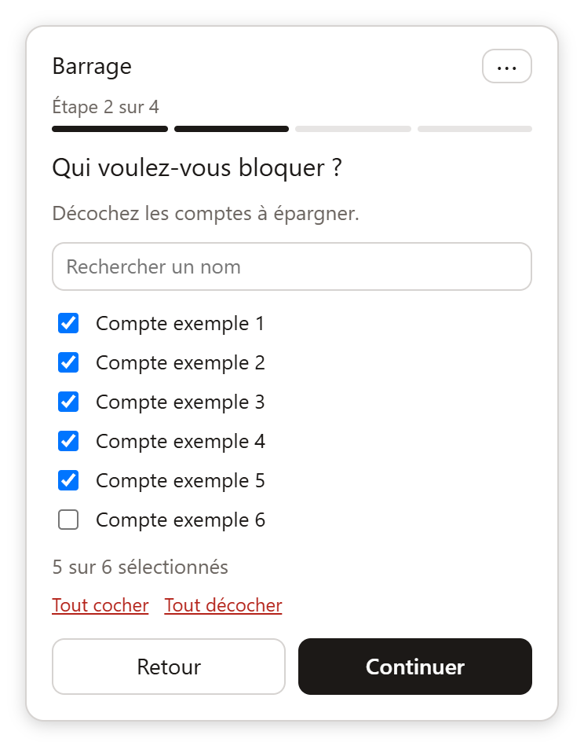
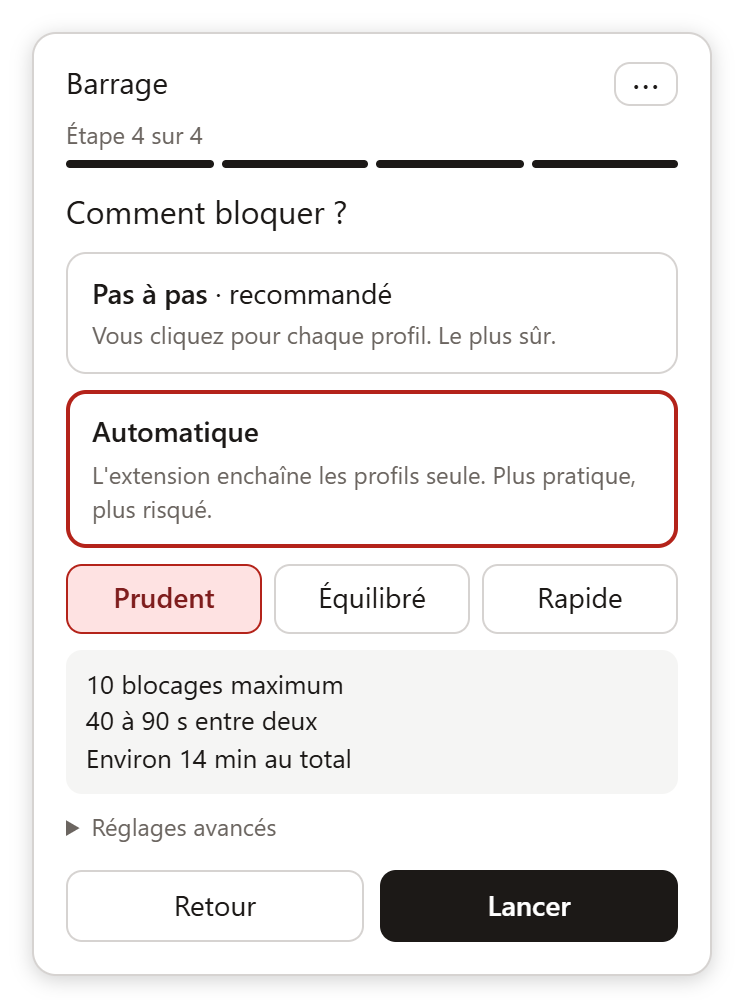
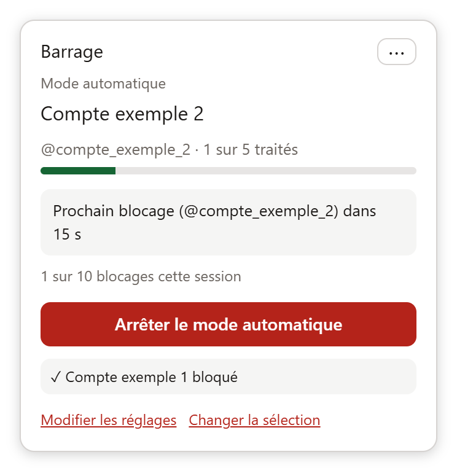

Bloquez une liste de comptes Instagram, un profil à la fois.
Barrage est une extension Firefox qui fait à votre place les gestes habituels (⋯, Bloquer, Confirmer) sur les profils d'une liste que vous importez. Pas de mot de passe, aucune donnée envoyée nulle part.
Télécharger pour FirefoxVersion · Firefox 140 ou plus récent, sur ordinateur · signée par Mozilla
Comment ça marche
Un assistant en quatre étapes, dans le panneau « Barrage » qui apparaît sur instagram.com :
Importez votre liste
Collez des pseudos ou choisissez un fichier : le panneau annonce combien de comptes il a reconnus.
Choisissez qui bloquer
Décochez les comptes que vous voulez épargner. Une recherche et « Tout cocher » facilitent le tri.
Vérifiez et confirmez
Un résumé de ce qui va se passer, l'avertissement sur les conditions d'Instagram, et une case « J'ai compris ».
Choisissez le mode
Pas à pas (un clic par profil, recommandé) ou automatique. Les réglages du mode automatique se font ici, à la fin.
- Pas à pas : « Bloquer et passer au suivant » ouvre le menu ⋯, clique sur Bloquer puis sur Confirmer, et ouvre le profil suivant. Au moins 8 secondes entre deux blocages.
- Les comptes déjà bloqués et les profils indisponibles sont reconnus et sautés.
- Si la confirmation propose plusieurs choix (par exemple « et d'autres comptes possibles »), l'extension s'arrête plutôt que de choisir à votre place.
- Si l'interface d'Instagram change et que l'extension ne s'y retrouve plus, elle s'arrête et vous dit à quelle étape.
- Votre progression est mémorisée : vous reprenez quand vous voulez.
- Mode automatique, en option : l'extension enchaîne les profils seule. Trois préréglages (Prudent, Équilibré, Rapide) fixent le maximum de blocages par session et les délais aléatoires entre deux. Elle s'arrête à la première erreur ou au premier message de limite d'Instagram. Plus pratique, mais plus risqué : voir « À savoir ».
Format de la liste
Un pseudo ou un lien par ligne :
@pseudo1 https://www.instagram.com/pseudo2/ pseudo3
ou un fichier JSON :
[
{ "compte": "pseudo1", "nom": "Nom affiché" },
"pseudo2"
]
En images



Captures réalisées avec des comptes d'exemple fictifs.
Installation
Téléchargez l'extension
Cliquez sur le bouton ci-dessus avec Firefox. S'il demande d'autoriser ce site à installer un module, acceptez.
Confirmez l'ajout
Firefox affiche les permissions demandées : accès à
www.instagram.comet stockage local. Cliquez sur « Ajouter ».Ouvrez Instagram
Connectez-vous à instagram.com : le bouton « Barrage » apparaît en bas à gauche.
Si le fichier se télécharge au lieu de s'installer, ouvrez-le avec Firefox ou glissez-le dans une fenêtre Firefox. Les mises à jour sont manuelles : revenez sur cette page pour une nouvelle version. Chrome, Edge et Firefox sur mobile ne sont pas pris en charge.
Vie privée
- Aucune donnée collectée ni envoyée. Il n'y a pas de serveur : la liste et votre progression restent dans le stockage local de votre navigateur.
- Aucun mot de passe. L'extension agit dans la session Instagram que vous avez déjà ouverte.
- Permissions minimales : accès à
www.instagram.comet stockage local.
À savoir avant de l'utiliser
Ce n'est pas un outil officiel. Instagram ne propose pas d'API pour bloquer des comptes : Barrage actionne l'interface web, comme vous le feriez à la main, mais de façon automatisée.
Cela sort du cadre strict des conditions d'utilisation d'Instagram. Un clic par profil et un délai entre les blocages limitent le risque que le compte soit temporairement restreint, sans l'éliminer. Vous l'utilisez sous votre responsabilité.
Le mode automatique, plus proche d'un robot, augmente ce risque : commencez par de petites sessions, espacez-les, et arrêtez-vous plusieurs heures si Instagram signale une limite.
L'interface d'Instagram change sans préavis et peut casser l'extension. Elle fonctionne avec l'interface en français ou en anglais.
Questions fréquentes
Pourquoi aucune liste n'est fournie ?
Barrage est un outil neutre : c'est vous qui décidez qui bloquer. Vous pouvez utiliser une liste que vous avez écrite vous-même ou qu'une personne de confiance vous a transmise. Relisez toujours une liste avant de l'importer.
Que se passe-t-il si Instagram m'affiche une erreur ou me demande d'attendre ?
Arrêtez-vous et réessayez plus tard, avec moins de blocages à la suite. L'extension s'arrête d'elle-même quand elle ne retrouve pas les boutons attendus.
Les comptes déjà bloqués sont-ils rebloqués ?
Non. Un compte déjà bloqué est reconnu et marqué comme tel, sans action.
Comment annuler ?
Barrage ne débloque pas. Pour débloquer un compte, utilisez Instagram : Paramètres, puis Comptes bloqués. Désinstaller l'extension depuis about:addons efface aussi sa liste et sa progression.
Pourquoi seulement Firefox ?
Elle est conçue et signée pour Firefox. Une version pour d'autres navigateurs n'existe pas pour l'instant.